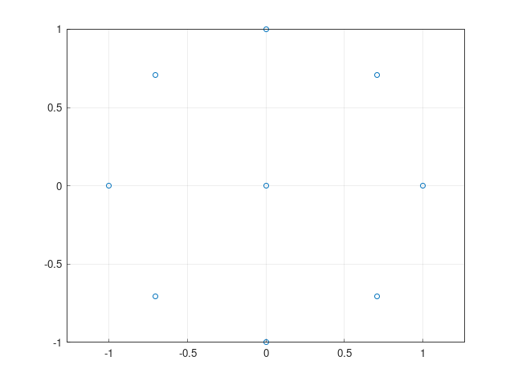

rbt_samplings is a utility library for RobinTrace. It implements point samplings in 2D.
Scope
The point samplings are defined for:
- Various apertures: disk, square, etc.
- Various distributions: grid, disk-uniform, etc.
- With a parameterizable number of points.
We define printers and plotters for these points, as well as interface utilities with the rest of RobinTrace.
The point samplings are typically used to define aperture stop sampling schemes with rays. We also use these samplings in the renderer for RobinTrace.
Example
The following is an example file showing some of the features in rbt_samplings.
#include <iostream>
int main () {
std::cout << "# rbt-samplings example #" << std::endl;
std::cout << "## grid_square sampling" << std::endl;
std::cout << gs << std::endl;
std::cout << "## disk_uniform sampling" << std::endl;
std::cout << du << std::endl;
std::cout << "## Clone a point_sampling" << std::endl;
std::unique_ptr<point_sampling> du_clone = du.clone();
std::cout << *du_clone << std::endl;
std::cout << "## Scale a point_sampling" << std::endl;
du_clone->scale(2);
std::cout << *du_clone << std::endl;
std::cout << "## Convert to a ray bundle" << std::endl;
bun du_b = du.to_ray_bundle(Vec3(0, 0, 1));
std::cout << du_b << std::endl;
std::cout << "## Triangulate the sampling" << std::endl;
std::cout << du_tri << std::endl;
std::cout << "## Plot the sampling" << std::endl;
du.plot();
std::cout << "## Plot to a file" << std::endl;
du.plot_tofile("disk_uniform_3.png");
}
Point sampling of the unit square according to a regular cartesian grid with n points on its side.
Definition: grid_square.h:9
std::vector< triangle_data > triangulation
Triangulation set.
Definition: triangle_data.h:16
The following image is produced:
